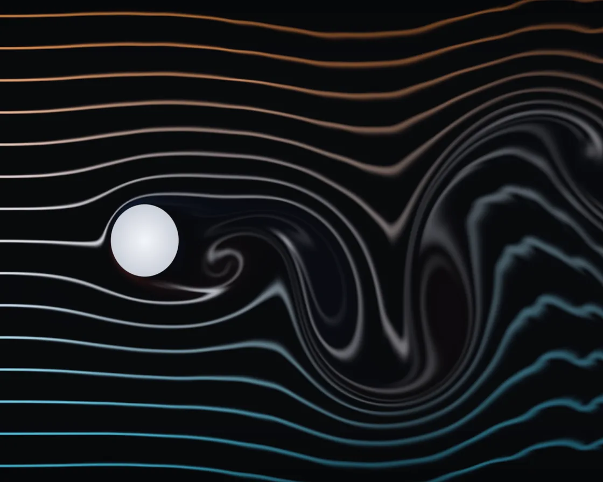

Wind tunnel
Wind tunnel is a WebGL effect: GPU lattice Boltzmann solver shedding a Kármán vortex street. One plain JavaScript file with no dependencies; add it with npx motion-library add wind-tunnel.

Open it live, tune it and copy the code
What is Wind tunnel?
Smoke lines flow past a cylinder, wing or plate and roll into a vortex street; drag the body.
How does Wind tunnel work?
A D2Q9 lattice Boltzmann solver: nine populations per cell stream and relax toward equilibrium; MacCormack advection keeps the smoke curls sharp.
How do I add Wind tunnel to my website?
- In your project folder, run
npx motion-library add wind-tunnel. It writesanimations/wind-tunnel.js. Needs Node 18 or newer. - Import it and call it with a container element that has a size:
import fx from './animations/wind-tunnel.js'; const stop = fx(document.querySelector('#hero')); - Call
stop()to clean up, for example when a component unmounts.
Every setting below is also a flag, so you can install it already tuned: npx motion-library add wind-tunnel --reynolds 600.
What settings can I tweak?
| Setting | Flag | Default | Range | Step |
|---|---|---|---|---|
| Reynolds number | --reynolds | 220 | 60 to 600 | 10 |
| Speed | --speed | 1 | 0.3 to 2 | 0.1 |
| Smoke lines | --smoke | 15 | 6 to 30 | 1 |
Specifications
- Renderer
- WebGL
- Category
- Flow & particles
- Dependencies
- None
- File size
- 16.3 KB, unminified
- Interactive
- Yes: it responds to the pointer
- Reduced motion
- Plays the same for everyone
- Licence
- MIT-0: use it anywhere, no credit needed
Source code
// Wind tunnel: a real fluid solver on the GPU (lattice Boltzmann, D2Q9). Every cell holds nine populations of
// particles, one per direction; each step they stream to the neighbouring cell and relax toward equilibrium, and
// out of that comes viscous flow. Past a body the boundary layer peels away and the wake rolls up into a Kármán
// vortex street: eddies shed alternately from each side. A rake of smoke lines rides the flow as in a real tunnel.
// The body changes every few seconds (cylinder, wing, plate); drag it to steer the wake.
const PARAMS = { reynolds: 220, speed: 1, smoke: 15 };
export default function (stage) {
const canvas = document.createElement('canvas');
canvas.style.cssText = 'position:absolute;inset:0;width:100%;height:100%;display:block;touch-action:none;cursor:grab';
stage.append(canvas);
const gl = canvas.getContext('webgl2', { antialias: false });
if (!gl || !gl.getExtension('EXT_color_buffer_float')) { stage.textContent = 'This needs WebGL2 with float render targets.'; return () => canvas.remove(); }
let NX = 480, NY = 200; // lattice size: set from the stage's shape below
const U0 = 0.1; // inflow speed, in cells per step
const QUAD = `#version 300 es
in vec2 p; out vec2 uv; void main() { uv = p * .5 + .5; gl_Position = vec4(p, 0, 1); }`;
const SHAPE = `
uniform vec4 OB; uniform int SH; // body: centre (cells), size, angle; which shape
// signed distance (in cells) to the body: cylinder, a NACA 0012 wing at an angle, or a flat plate
float body(vec2 q) {
vec2 p = q - OB.xy; float c = cos(OB.w), s = sin(OB.w); p = vec2(c * p.x + s * p.y, -s * p.x + c * p.y);
float D = OB.z;
if (SH == 0) return length(p) - D * .5;
if (SH == 1) {
float ch = D * 2.6, x = p.x / ch + .35;
float xc = clamp(x, 0., 1.), yt = .6 * ch * (.2969 * sqrt(xc) - .126 * xc - .3516 * xc * xc + .2843 * xc * xc * xc - .1015 * xc * xc * xc * xc);
float d = abs(p.y) - yt;
return x < 0. ? length(vec2(x * ch, p.y)) : x > 1. ? length(vec2((x - 1.) * ch, p.y)) : d;
}
vec2 b = abs(p) - vec2(D * .09, D * .62); return length(max(b, 0.)) + min(max(b.x, b.y), 0.);
}`;
// one lattice Boltzmann step: pull the populations from the neighbours (bouncing back off the body), relax them
const stepFS = `#version 300 es
precision highp float; precision highp int;
uniform highp sampler2D T0, T1, T2; uniform ivec2 N; uniform float TAU, U; uniform vec2 OV;
layout(location = 0) out vec4 o0; layout(location = 1) out vec4 o1; layout(location = 2) out vec4 o2;
${SHAPE}
const vec2 E[9] = vec2[9](vec2(0, 0), vec2(1, 0), vec2(0, 1), vec2(-1, 0), vec2(0, -1), vec2(1, 1), vec2(-1, 1), vec2(-1, -1), vec2(1, -1));
const float Wt[9] = float[9](4. / 9., 1. / 9., 1. / 9., 1. / 9., 1. / 9., 1. / 36., 1. / 36., 1. / 36., 1. / 36.);
const int OPP[9] = int[9](0, 3, 4, 1, 2, 7, 8, 5, 6);
float pop(ivec2 c, int i) { if (i < 4) return texelFetch(T0, c, 0)[i]; if (i < 8) return texelFetch(T1, c, 0)[i - 4]; return texelFetch(T2, c, 0).x; }
float feq(int i, float rho, vec2 u) { float eu = dot(E[i], u); return Wt[i] * rho * (1. + 3. * eu + 4.5 * eu * eu - 1.5 * dot(u, u)); }
void main() {
ivec2 c = ivec2(gl_FragCoord.xy);
float f[9]; float rho = 0.; vec2 u = vec2(0);
if (body(vec2(c)) < 0.) { // inside the body: still fluid at the body's speed
for (int i = 0; i < 9; i++) f[i] = feq(i, 1., OV);
o0 = vec4(f[0], f[1], f[2], f[3]); o1 = vec4(f[4], f[5], f[6], f[7]); o2 = vec4(f[8], 1., 0., 0.); return;
}
for (int i = 0; i < 9; i++) {
ivec2 s = c - ivec2(E[i]); s.y = (s.y + N.y) % N.y; s.x = clamp(s.x, 0, N.x - 1);
f[i] = body(vec2(s)) < 0. ? pop(c, OPP[i]) + 6. * Wt[i] * dot(E[i], OV) : pop(s, i);
}
if (c.x == 0) { for (int i = 0; i < 9; i++) f[i] = feq(i, 1., vec2(U, 0)); }
for (int i = 0; i < 9; i++) { rho += f[i]; u += f[i] * E[i]; }
u /= rho;
// Smagorinsky: where the flow shears hard, add a little viscosity, which keeps high speeds stable
float pxx = 0., pyy = 0., pxy = 0.;
for (int i = 0; i < 9; i++) { float ne = f[i] - feq(i, rho, u); pxx += E[i].x * E[i].x * ne; pyy += E[i].y * E[i].y * ne; pxy += E[i].x * E[i].y * ne; }
float Q = sqrt(2. * (pxx * pxx + pyy * pyy + 2. * pxy * pxy));
float tau = .5 * (TAU + sqrt(TAU * TAU + 18. * .0144 * Q / rho));
for (int i = 0; i < 9; i++) f[i] += (feq(i, rho, u) - f[i]) / tau;
o0 = vec4(f[0], f[1], f[2], f[3]); o1 = vec4(f[4], f[5], f[6], f[7]); o2 = vec4(f[8], rho, u);
}`;
// smoke: carried backwards along the velocity (semi-Lagrangian), fed in by a rake of nozzles at the inlet
const smokeFS = `#version 300 es
precision highp float; in vec2 uv; out vec4 o;
uniform sampler2D D, HAT; uniform highp sampler2D T2; uniform ivec2 N; uniform float K, LINES, T; uniform int MODE;
${SHAPE}
vec2 vel(vec2 p) { // bilinear velocity from the lattice, in cells per step
p = p - .5; ivec2 i = ivec2(floor(p)); vec2 f = fract(p);
ivec2 m = N - 1;
vec2 a = texelFetch(T2, clamp(i, ivec2(0), m), 0).zw, b = texelFetch(T2, clamp(i + ivec2(1, 0), ivec2(0), m), 0).zw;
vec2 c = texelFetch(T2, clamp(i + ivec2(0, 1), ivec2(0), m), 0).zw, d = texelFetch(T2, clamp(i + ivec2(1, 1), ivec2(0), m), 0).zw;
return mix(mix(a, b, f.x), mix(c, d, f.x), f.y);
}
void main() {
vec2 p = uv * vec2(N), dim = vec2(N) * 2.;
vec2 v = vel(p), back = p - vel(p - v * K * .5) * K; // a midpoint step keeps the curls round
vec4 s;
if (MODE == 0) s = texture(D, back / vec2(N)); // predict: plain backward advection
else {
// MacCormack: advect the prediction forward again, and the mismatch is the blur it introduced; take half back.
// Clamping to the neighbourhood it came from stops the correction from overshooting into rings.
vec2 fwd = p + vel(p + v * K * .5) * K;
vec4 hat = texture(HAT, uv), tilde = texture(HAT, fwd / vec2(N));
s = hat + .5 * (texture(D, uv) - tilde);
vec2 bt = back * 2. - .5, b0 = (floor(bt) + .5) / dim, e = 1. / dim;
vec4 a = texture(D, b0), b = texture(D, b0 + vec2(e.x, 0)), c = texture(D, b0 + vec2(0, e.y)), d = texture(D, b0 + e);
s = clamp(s, min(min(a, b), min(c, d)), max(max(a, b), max(c, d))) * .999;
}
if (body(p) < 1.) s = vec4(0);
if (p.x < 2.5) { // the rake: thin coloured jets at even heights
float k = (uv.y * LINES) - .5, j = floor(k + .5), d = abs(k - j) * float(N.y) / LINES;
float h = j / max(1., LINES - 1.);
vec3 c = mix(mix(vec3(.2, .8, 1.), vec3(.95, .95, 1.), smoothstep(0., .5, h)), vec3(1., .5, .2), smoothstep(.5, 1., h));
s = vec4(c * smoothstep(1.1, .45, d), 1);
}
o = s;
}`;
const showFS = `#version 300 es
precision highp float; in vec2 uv; out vec4 o;
uniform sampler2D D; uniform highp sampler2D T2; uniform ivec2 N; uniform vec2 R; uniform float T;
${SHAPE}
void main() {
vec2 p = uv * vec2(N); ivec2 c = ivec2(p);
// vorticity tints the air: red one way round, blue the other
vec2 r = texelFetch(T2, clamp(c + ivec2(1, 0), ivec2(0), N - 1), 0).zw, l = texelFetch(T2, clamp(c - ivec2(1, 0), ivec2(0), N - 1), 0).zw;
vec2 t = texelFetch(T2, clamp(c + ivec2(0, 1), ivec2(0), N - 1), 0).zw, b = texelFetch(T2, clamp(c - ivec2(0, 1), ivec2(0), N - 1), 0).zw;
float w = (r.y - l.y - t.x + b.x) * 8.;
vec3 col = vec3(.026, .03, .042) + vec3(.55, .14, .1) * min(max(w, 0.), 1.) * .3 + vec3(.08, .22, .55) * min(max(-w, 0.), 1.) * .3;
vec3 s = texture(D, uv).rgb;
col += s * 1.5; col = col / (1. + col * .45);
// the body: a pale solid with a soft rim
float d = body(p), px = float(N.y) / R.y;
vec3 bodyC = mix(vec3(.78, .8, .84), vec3(.95, .96, .98), clamp(-d / (OB.z * .5), 0., 1.));
col = mix(col, bodyC, smoothstep(px, -px, d));
col *= 1. - .25 * pow(abs(uv.y - .5) * 2., 6.);
o = vec4(pow(col, vec3(.95)), 1);
}`;
const sh = (type, src) => { const s = gl.createShader(type); gl.shaderSource(s, src); gl.compileShader(s); if (!gl.getShaderParameter(s, gl.COMPILE_STATUS)) throw new Error(gl.getShaderInfoLog(s)); return s; };
const prog = fs => {
const p = gl.createProgram(); gl.attachShader(p, sh(gl.VERTEX_SHADER, QUAD)); gl.attachShader(p, sh(gl.FRAGMENT_SHADER, fs)); gl.bindAttribLocation(p, 0, 'p'); gl.linkProgram(p);
if (!gl.getProgramParameter(p, gl.LINK_STATUS)) throw new Error(gl.getProgramInfoLog(p));
const u = {}; for (let i = 0, n = gl.getProgramParameter(p, gl.ACTIVE_UNIFORMS); i < n; i++) { const nm = gl.getActiveUniform(p, i).name; u[nm] = gl.getUniformLocation(p, nm); }
return { p, u };
};
const stepP = prog(stepFS), smokeP = prog(smokeFS), showP = prog(showFS);
const quad = gl.createVertexArray(); gl.bindVertexArray(quad);
gl.bindBuffer(gl.ARRAY_BUFFER, gl.createBuffer()); gl.bufferData(gl.ARRAY_BUFFER, new Float32Array([-1, -1, 3, -1, -1, 3]), gl.STATIC_DRAW);
gl.enableVertexAttribArray(0); gl.vertexAttribPointer(0, 2, gl.FLOAT, false, 0, 0);
const tex = (w, h, ifmt, type, filt, data = null) => {
const t = gl.createTexture(); gl.bindTexture(gl.TEXTURE_2D, t); gl.texImage2D(gl.TEXTURE_2D, 0, ifmt, w, h, 0, gl.RGBA, type, data);
gl.texParameteri(gl.TEXTURE_2D, gl.TEXTURE_MIN_FILTER, filt); gl.texParameteri(gl.TEXTURE_2D, gl.TEXTURE_MAG_FILTER, filt);
gl.texParameteri(gl.TEXTURE_2D, gl.TEXTURE_WRAP_S, gl.CLAMP_TO_EDGE); gl.texParameteri(gl.TEXTURE_2D, gl.TEXTURE_WRAP_T, gl.CLAMP_TO_EDGE);
return t;
};
let lat = [], smoke = [];
const W9 = [4 / 9, 1 / 9, 1 / 9, 1 / 9, 1 / 9, 1 / 36, 1 / 36, 1 / 36, 1 / 36], EX = [0, 1, 0, -1, 0, 1, -1, -1, 1];
function build() {
for (const L of lat) { L.t.forEach(t => gl.deleteTexture(t)); gl.deleteFramebuffer(L.fb); }
for (const S of smoke) { gl.deleteTexture(S.t); gl.deleteFramebuffer(S.fb); }
const a = (stage.clientWidth || 1) / (stage.clientHeight || 1);
NX = 480; NY = Math.max(120, Math.min(360, Math.round(NX / a)));
// start everywhere at the inflow's equilibrium
const eq = EX.map((ex, i) => { const eu = ex * U0; return W9[i] * (1 + 3 * eu + 4.5 * eu * eu - 1.5 * U0 * U0); });
const d0 = new Float32Array(NX * NY * 4), d1 = new Float32Array(NX * NY * 4), d2 = new Float32Array(NX * NY * 4);
for (let i = 0; i < NX * NY; i++) { d0.set(eq.slice(0, 4), i * 4); d1.set(eq.slice(4, 8), i * 4); d2.set([eq[8], 1, U0, 0], i * 4); }
lat = [0, 1].map(() => {
const t = [d0, d1, d2].map(d => tex(NX, NY, gl.RGBA32F, gl.FLOAT, gl.NEAREST, d));
const fb = gl.createFramebuffer(); gl.bindFramebuffer(gl.FRAMEBUFFER, fb);
t.forEach((x, i) => gl.framebufferTexture2D(gl.FRAMEBUFFER, gl.COLOR_ATTACHMENT0 + i, gl.TEXTURE_2D, x, 0));
gl.drawBuffers([gl.COLOR_ATTACHMENT0, gl.COLOR_ATTACHMENT1, gl.COLOR_ATTACHMENT2]);
return { t, fb };
});
smoke = [0, 1, 2].map(() => { const t = tex(NX * 2, NY * 2, gl.RGBA16F, gl.HALF_FLOAT, gl.LINEAR); const fb = gl.createFramebuffer(); gl.bindFramebuffer(gl.FRAMEBUFFER, fb); gl.framebufferTexture2D(gl.FRAMEBUFFER, gl.COLOR_ATTACHMENT0, gl.TEXTURE_2D, t, 0); return { t, fb }; });
for (const S of smoke) { gl.bindFramebuffer(gl.FRAMEBUFFER, S.fb); gl.clearColor(0, 0, 0, 0); gl.clear(gl.COLOR_BUFFER_BIT); }
ob.x = NX * 0.24; ob.y = NY * 0.5; ob.tx = ob.x; ob.ty = ob.y;
}
const ob = { x: 0, y: 0, tx: 0, ty: 0, vx: 0, vy: 0, drag: false };
let W = 1, H = 1, built = '';
const resize = () => {
const d = Math.min(devicePixelRatio, 2); W = canvas.width = Math.max(1, (stage.clientWidth * d) | 0); H = canvas.height = Math.max(1, (stage.clientHeight * d) | 0);
const key = Math.round(((stage.clientWidth || 1) / (stage.clientHeight || 1)) * 20);
if (key !== built) { built = key; build(); } // a new shape of stage needs a new lattice
};
const ro = new ResizeObserver(resize); ro.observe(stage); resize();
// drag the body
const toCell = e => { const r = canvas.getBoundingClientRect(); return [((e.clientX - r.left) / r.width) * NX, (1 - (e.clientY - r.top) / r.height) * NY]; };
const down = e => { const [x, y] = toCell(e); if (Math.hypot(x - ob.x, y - ob.y) < NY * 0.2) { ob.drag = true; canvas.setPointerCapture(e.pointerId); canvas.style.cursor = 'grabbing'; } };
const move = e => { if (!ob.drag) return; const [x, y] = toCell(e); ob.tx = Math.min(NX * 0.6, Math.max(NY * 0.15, x)); ob.ty = Math.min(NY * 0.85, Math.max(NY * 0.15, y)); };
const up = () => { ob.drag = false; canvas.style.cursor = 'grab'; };
canvas.addEventListener('pointerdown', down); canvas.addEventListener('pointermove', move); canvas.addEventListener('pointerup', up); canvas.addEventListener('pointercancel', up);
let raf, last = performance.now(), t = 0, cur = 0, sCur = 0, shapeT = 0, shape = 0;
const ANG = [0, -0.21, 0]; // the wing flies at 12° (it stalls and sheds)
function frame(now) {
const dt = Math.min(0.05, (now - last) / 1000); last = now; t += dt;
shapeT += dt; if (shapeT > 14) { shapeT = 0; shape = (shape + 1) % 3; }
// left alone, the body bobs gently, which keeps the wake lively
if (!ob.drag) { ob.tx = NX * 0.24; ob.ty = NY * (0.5 + 0.06 * Math.sin(t * 0.7)); }
const steps = Math.max(1, Math.round(10 * PARAMS.speed));
const nx = ob.x + (ob.tx - ob.x) * Math.min(1, dt * 8), ny = ob.y + (ob.ty - ob.y) * Math.min(1, dt * 8);
ob.vx = Math.max(-0.08, Math.min(0.08, (nx - ob.x) / steps)); ob.vy = Math.max(-0.08, Math.min(0.08, (ny - ob.y) / steps));
const D = NY * 0.15, nu = (U0 * D) / Math.max(40, PARAMS.reynolds), tau = Math.max(0.503, 3 * nu + 0.5);
gl.useProgram(stepP.p); gl.bindVertexArray(quad); gl.viewport(0, 0, NX, NY);
gl.uniform1i(stepP.u.T0, 0); gl.uniform1i(stepP.u.T1, 1); gl.uniform1i(stepP.u.T2, 2);
gl.uniform2i(stepP.u.N, NX, NY); gl.uniform1f(stepP.u.TAU, tau); gl.uniform1f(stepP.u.U, U0); gl.uniform1i(stepP.u.SH, shape); gl.uniform2f(stepP.u.OV, ob.vx, ob.vy);
for (let s = 0; s < steps; s++) {
ob.x += ob.vx; ob.y += ob.vy;
gl.uniform4f(stepP.u.OB, ob.x, ob.y, D, ANG[shape]);
const src = lat[cur], dst = lat[1 - cur];
src.t.forEach((x, i) => { gl.activeTexture(gl.TEXTURE0 + i); gl.bindTexture(gl.TEXTURE_2D, x); });
gl.bindFramebuffer(gl.FRAMEBUFFER, dst.fb); gl.drawArrays(gl.TRIANGLES, 0, 3); cur = 1 - cur;
}
// smoke
gl.useProgram(smokeP.p); gl.viewport(0, 0, NX * 2, NY * 2);
const next = (sCur + 1) % 2, hat = smoke[2];
gl.activeTexture(gl.TEXTURE0); gl.bindTexture(gl.TEXTURE_2D, smoke[sCur].t); gl.activeTexture(gl.TEXTURE1); gl.bindTexture(gl.TEXTURE_2D, lat[cur].t[2]);
gl.activeTexture(gl.TEXTURE2); gl.bindTexture(gl.TEXTURE_2D, hat.t);
gl.uniform1i(smokeP.u.D, 0); gl.uniform1i(smokeP.u.T2, 1); gl.uniform1i(smokeP.u.HAT, 2); gl.uniform2i(smokeP.u.N, NX, NY); gl.uniform1f(smokeP.u.K, steps);
gl.uniform1f(smokeP.u.LINES, Math.round(PARAMS.smoke)); gl.uniform1f(smokeP.u.T, t); gl.uniform4f(smokeP.u.OB, ob.x, ob.y, D, ANG[shape]); gl.uniform1i(smokeP.u.SH, shape);
gl.uniform1i(smokeP.u.MODE, 0); gl.bindTexture(gl.TEXTURE_2D, null); // hat is the target of the predict pass
gl.bindFramebuffer(gl.FRAMEBUFFER, hat.fb); gl.drawArrays(gl.TRIANGLES, 0, 3);
gl.bindTexture(gl.TEXTURE_2D, hat.t); gl.uniform1i(smokeP.u.MODE, 1);
gl.bindFramebuffer(gl.FRAMEBUFFER, smoke[next].fb); gl.drawArrays(gl.TRIANGLES, 0, 3); sCur = next;
// show
gl.useProgram(showP.p); gl.bindFramebuffer(gl.FRAMEBUFFER, null); gl.viewport(0, 0, W, H);
gl.activeTexture(gl.TEXTURE0); gl.bindTexture(gl.TEXTURE_2D, smoke[sCur].t); gl.activeTexture(gl.TEXTURE1); gl.bindTexture(gl.TEXTURE_2D, lat[cur].t[2]);
gl.uniform1i(showP.u.D, 0); gl.uniform1i(showP.u.T2, 1); gl.uniform2i(showP.u.N, NX, NY); gl.uniform2f(showP.u.R, W, H); gl.uniform1f(showP.u.T, t);
gl.uniform4f(showP.u.OB, ob.x, ob.y, D, ANG[shape]); gl.uniform1i(showP.u.SH, shape);
gl.drawArrays(gl.TRIANGLES, 0, 3);
gl.activeTexture(gl.TEXTURE0);
raf = requestAnimationFrame(frame);
}
raf = requestAnimationFrame(frame);
return () => {
cancelAnimationFrame(raf); ro.disconnect();
canvas.removeEventListener('pointerdown', down); canvas.removeEventListener('pointermove', move); canvas.removeEventListener('pointerup', up); canvas.removeEventListener('pointercancel', up);
gl.getExtension('WEBGL_lose_context')?.loseContext(); canvas.remove();
};
}